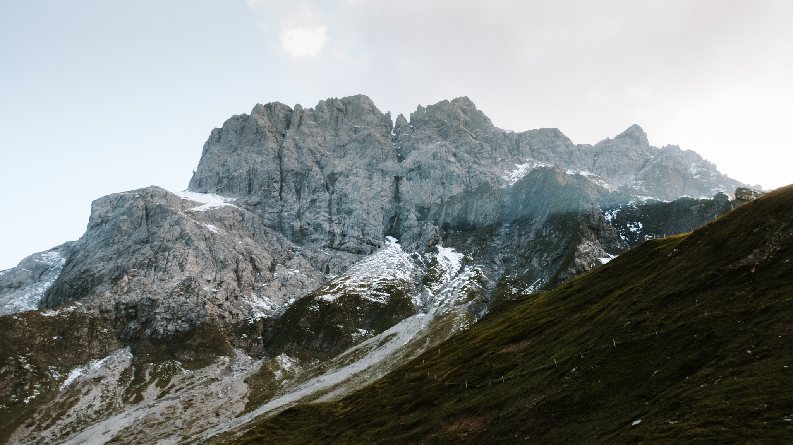

home
about me
portfolio
contact
portfolio
annette wiedenmann
Eine Übersicht über meine kreativ-Unfälle
Knipsereien
Wähle eine Kathegorie aus um mehr zu sehen
Neuseeland

Alpen DE, A, IT
Scandinavien
Malereien
Öl auf Holz
Buntstift
Tinte
Filmereien
Ich filme viel aber schneide nie, deshalb hier ein Platzhalter für vielleicht folgende Videos